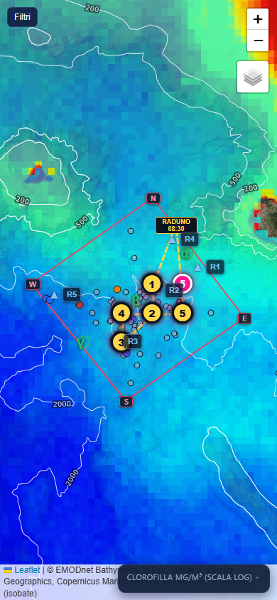
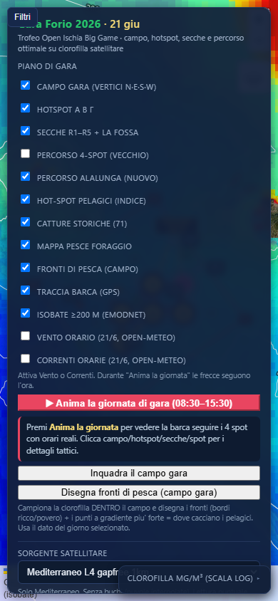
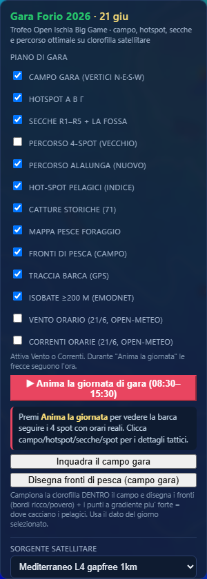
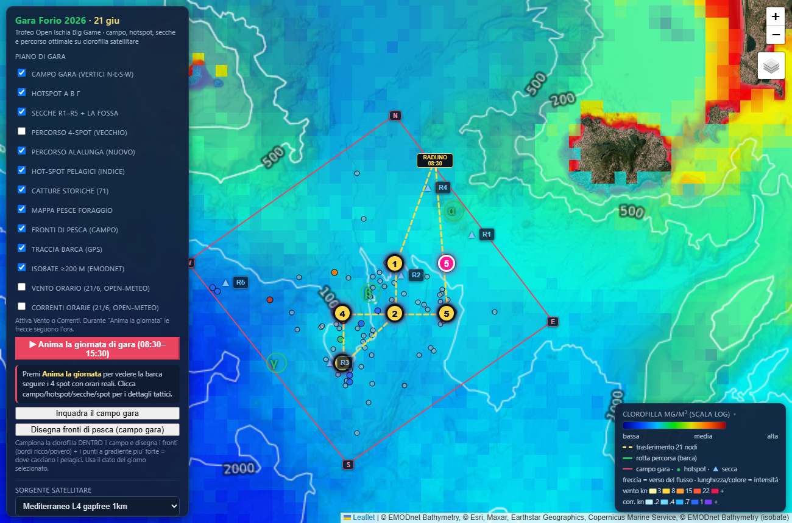
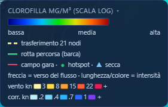

1. Aprire i comandi (Filtri)
Sul telefono la mappa parte a schermo pieno. Per aprire i comandi tocca il tasto Filtri in alto a sinistra. Per richiuderlo, ritocca Filtri.


A sinistra: avvio (mappa piena, tasto Filtri). A destra: pannello aperto.
2. Il pannello “PIANO DI GARA” — gli interruttori
Ogni spunta mostra o nasconde un elemento sulla mappa. Accendi solo quello che ti serve per non confonderti.

| Campo gara | Il perimetro ufficiale (vertici N·E·S·W). |
| Hotspot α β γ | I 3 hotspot storici del briefing (drop-off nord, centro, salto SW). |
| Secche R1–R5 | Le secche e La Fossa (strutture che concentrano il pesce). |
| Percorso 4-spot (vecchio) | Il vecchio percorso. Spento di default. |
| Percorso alalunga (nuovo) | Il percorso ottimale calcolato sulle catture reali (linea gialla). |
| Hot-spot pelagici | I punti migliori calcolati: blu = alalunga/aguglia/spada · rosa = tonno di branco. |
| Catture storiche (71) | I punti reali dove si è pescato, colore per specie. |
| Mappa pesce foraggio | Zone ricche di clorofilla (foraggio) — si disegna col pulsante apposito. |
| Fronti di pesca | I fronti (bordi ricco/povero) nel campo — pulsante apposito. |
| Traccia barca (GPS) | La rotta reale registrata dal tuo telefono (azzurra). |
| Isobate ≥200 m | Le linee di profondità (batimetria EMODnet). |
| Vento / Correnti orarie | Le frecce meteo previste per il 21/6, ora per ora. |
3. I pulsanti
▶ Anima la giornata di gara
Simula l'intera giornata (~48 s): la barca verde segue il percorso alalunga, dalle 08:30, in pesca fino alle 15:30, poi rientro al porto (extra, fuori gara). L'orologio e le frecce meteo seguono l'ora.
Inquadra il campo gara
Centra la mappa sul campo se ti sei allontanato con lo zoom.
Calcola indice pelagico / Percorso ottimale alalunga
Ricalcolano gli hot-spot e il percorso col dato satellitare del giorno selezionato. Il giorno della gara, riapri l'app e ricalcola: si tara sulle condizioni reali.
Esporta … GPX
Scaricano hot-spot, percorso o traccia in formato GPX, da caricare sul GPS/cartografico di bordo.
4. Tracking della barca
Per registrare la rotta reale durante la gara:
- Tocca ● Registra traccia barca e consenti la posizione quando il telefono lo chiede.
- La barca azzurra ti segue e la rotta si disegna in tempo reale. I dati restano salvati anche se ricarichi la pagina o perdi il segnale.
- A fine giornata: Salva traccia (resta nella lista “tracce salvate”), oppure Esporta traccia GPX per il GPS/PC.
- Dalla lista puoi mostrare, scaricare GPX o eliminare ogni traccia salvata.
5. La legenda e cosa vedi sulla mappa

| / | Hot-spot pelagici (blu = acqua blu/alalunga, rosa = produttivo/branco), numerati per priorità. |
| Pallini colorati | Catture storiche (blu alalunga, arancio tonno, rosso spada, grigio marche). |
| Linea gialla | Percorso ottimale alalunga (soste numerate con orario). |
| Linea azzurra | La tua traccia GPS reale. |

La legenda (in basso a destra) spiega la scala colore della clorofilla e i simboli. Tocca il titolo per aprirla/chiuderla.
Apri l'app
🐟 Vai alla mappa garaSuggerimento: apri il link, poi “Aggiungi a Home” per usarla come un'app.